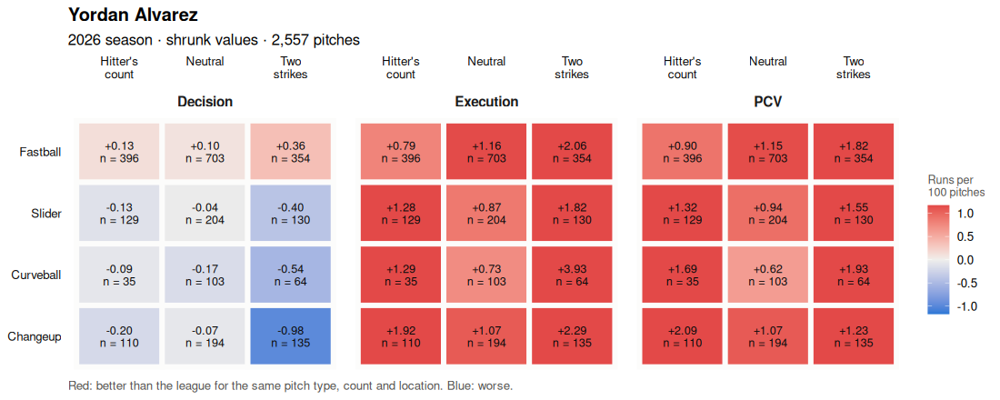

Each card shows, for one batter, the value produced above the league (runs per 100 pitches) by pitch type and count state, for decision , execution and total PCV . Red: better than the league; blue: worse. The number n is how many pitches the batter saw in the cell; thinly populated cells are pulled toward the batter’s overall level.
Batter: A.J. Ewing (1,865 pitches) Aaron Judge (1,188 pitches) Adley Rutschman (1,670 pitches) Adolis García (1,060 pitches) Alec Bohm (2,251 pitches) Alec Burleson (2,405 pitches) Alejandro Kirk (1,155 pitches) Alex Bregman (2,680 pitches) Alex Freeland (1,057 pitches) Andrew Benintendi (1,730 pitches) Andrew Vaughn (1,326 pitches) Andruw Monasterio (1,442 pitches) Andrés Giménez (1,772 pitches) Andy Pages (2,268 pitches) Angel Martínez (1,410 pitches) Austin Martin (1,337 pitches) Austin Riley (2,485 pitches) Austin Wells (1,542 pitches) Ben Rice (2,607 pitches) Ben Williamson (1,080 pitches) Blaze Alexander (1,047 pitches) Bo Bichette (2,544 pitches) Bobby Witt Jr. (2,291 pitches) Braden Montgomery (1,356 pitches) Brady House (1,269 pitches) Brandon Lowe (2,548 pitches) Brandon Marsh (2,023 pitches) Brandon Nimmo (2,497 pitches) Brandon Valenzuela (1,063 pitches) Brayan Rocchio (2,169 pitches) Brett Baty (1,827 pitches) Brice Turang (2,790 pitches) Brooks Lee (2,278 pitches) Bryan Reynolds (2,637 pitches) Bryce Eldridge (1,798 pitches) Bryce Harper (2,677 pitches) Bryson Stott (2,430 pitches) Byron Buxton (1,445 pitches) CJ Abrams (2,438 pitches) Cal Raleigh (2,187 pitches) Caleb Durbin (2,051 pitches) Cam Smith (2,290 pitches) Carlos Cortes (1,477 pitches) Carlos Narváez (1,124 pitches) Carson Benge (2,607 pitches) Carson Kelly (1,582 pitches) Carter Jensen (2,419 pitches) Casey Schmitt (1,414 pitches) Ceddanne Rafaela (1,986 pitches) Cedric Mullins (1,855 pitches) Chandler Simpson (1,822 pitches) Chase DeLauter (2,090 pitches) Chase Meidroth (2,529 pitches) Christian Walker (2,390 pitches) Christian Yelich (2,046 pitches) Coby Mayo (1,851 pitches) Cody Bellinger (2,034 pitches) Cole Carrigg (1,375 pitches) Cole Young (2,328 pitches) Colson Montgomery (2,369 pitches) Colt Keith (1,560 pitches) Colton Cowser (1,592 pitches) Connor Norby (1,433 pitches) Cooper Pratt (1,024 pitches) Corbin Carroll (2,574 pitches) Corey Seager (1,576 pitches) Curtis Mead (1,367 pitches) Dane Myers (1,292 pitches) Daniel Schneemann (1,098 pitches) Dansby Swanson (1,826 pitches) Daulton Varsho (1,918 pitches) David Hamilton (1,450 pitches) Daylen Lile (2,312 pitches) Denzer Guzman (1,076 pitches) Dillon Dingler (2,264 pitches) Dominic Canzone (1,925 pitches) Dominic Smith (1,124 pitches) Drake Baldwin (2,317 pitches) Drew Gilbert (1,509 pitches) Dylan Beavers (1,459 pitches) Dylan Crews (1,570 pitches) Edouard Julien (1,067 pitches) Elly De La Cruz (2,539 pitches) Ernie Clement (1,840 pitches) Esmerlyn Valdez (1,211 pitches) Eugenio Suárez (1,990 pitches) Evan Carter (1,739 pitches) Ezequiel Duran (2,251 pitches) Ezequiel Tovar (1,772 pitches) Fernando Tatis Jr. (2,474 pitches) Francisco Alvarez (1,678 pitches) Francisco Lindor (1,899 pitches) Freddie Freeman (2,664 pitches) Gabriel Moreno (2,304 pitches) Garrett Mitchell (2,087 pitches) Gary Sánchez (1,097 pitches) Gavin Sheets (1,774 pitches) George Springer (1,988 pitches) Geraldo Perdomo (2,769 pitches) Gleyber Torres (1,718 pitches) Griffin Conine (1,191 pitches) Gunnar Henderson (2,726 pitches) Hao-Yu Lee (1,319 pitches) Heliot Ramos (1,679 pitches) Henry Bolte (1,677 pitches) Henry Davis (1,081 pitches) Heriberto Hernández (1,951 pitches) Hunter Goodman (2,079 pitches) Ian Happ (2,654 pitches) Ildemaro Vargas (1,610 pitches) Isaac Collins (1,993 pitches) Isaac Paredes (2,868 pitches) Iván Herrera (2,831 pitches) J.P. Crawford (1,994 pitches) J.T. Realmuto (1,810 pitches) JJ Bleday (2,048 pitches) JJ Wetherholt (2,395 pitches) Jac Caglianone (1,919 pitches) Jackson Chourio (2,124 pitches) Jackson Holliday (1,287 pitches) Jackson Merrill (2,443 pitches) Jacob Wilson (1,103 pitches) Jacob Young (1,685 pitches) Jake Bauers (2,313 pitches) Jake Burger (2,297 pitches) Jake Cronenworth (1,686 pitches) Jake Mangum (1,649 pitches) Jake McCarthy (1,849 pitches) Jakob Marsee (2,255 pitches) James Wood (2,540 pitches) Jared Triolo (1,312 pitches) Jared Young (1,266 pitches) Jarren Duran (2,147 pitches) Javier Sanoja (1,554 pitches) Jazz Chisholm Jr. (2,084 pitches) Jeff McNeil (1,727 pitches) Jeremiah Jackson (1,003 pitches) Jeremy Peña (1,742 pitches) Jesús Sánchez (1,152 pitches) Jo Adell (2,470 pitches) Joc Pederson (1,699 pitches) Joe Mack (1,241 pitches) Joey Ortiz (1,535 pitches) Jonah Heim (1,394 pitches) Jonathan Aranda (2,609 pitches) Jonny DeLuca (1,302 pitches) Jorbit Vivas (1,252 pitches) Jordan Walker (2,343 pitches) Jorge Soler (1,386 pitches) Jose Altuve (1,949 pitches) Josh Bell (2,460 pitches) Josh Jung (1,558 pitches) Josh Lowe (1,390 pitches) Josh Naylor (2,080 pitches) José Caballero (1,753 pitches) José Fermín (1,474 pitches) José Ramírez (2,147 pitches) José Tena (1,088 pitches) Juan Soto (1,842 pitches) Julio Rodríguez (2,350 pitches) Jung Hoo Lee (2,042 pitches) Junior Caminero (2,610 pitches) Justin Crawford (1,599 pitches) Kazuma Okamoto (2,575 pitches) Keibert Ruiz (1,095 pitches) Ketel Marte (2,218 pitches) Kevin McGonigle (2,737 pitches) Kody Clemens (2,184 pitches) Konnor Griffin (1,261 pitches) Kyle Isbel (1,064 pitches) Kyle Karros (1,810 pitches) Kyle Manzardo (1,392 pitches) Kyle Schwarber (2,924 pitches) Kyle Stowers (1,866 pitches) Kyle Tucker (2,389 pitches) Lane Thomas (1,478 pitches) Lars Nootbaar (1,319 pitches) Lawrence Butler (2,140 pitches) Leody Taveras (1,751 pitches) Liam Hicks (1,984 pitches) Luis Arraez (2,347 pitches) Luis García Jr. (1,922 pitches) Luis Rengifo (1,312 pitches) Luis Torrens (1,065 pitches) Luke Keaschall (2,228 pitches) Luke Raley (1,063 pitches) Maikel Garcia (1,254 pitches) Manny Machado (2,613 pitches) Marcell Ozuna (1,193 pitches) Marcus Semien (1,998 pitches) Mark Vientos (1,038 pitches) Masataka Yoshida (1,024 pitches) Masyn Winn (2,071 pitches) Matt Chapman (1,363 pitches) Matt McLain (1,918 pitches) Matt Olson (2,823 pitches) Matt Vierling (1,032 pitches) Mauricio Dubón (2,203 pitches) Max Muncy (2,227 pitches) Max Muncy (1,066 pitches) Michael Busch (2,721 pitches) Michael Conforto (1,177 pitches) Michael Harris II (2,087 pitches) Michael Massey (1,577 pitches) Mickey Moniak (1,460 pitches) Miguel Vargas (2,701 pitches) Mike Trout (2,637 pitches) Mike Yastrzemski (1,674 pitches) Moisés Ballesteros (1,318 pitches) Mookie Betts (1,889 pitches) Munetaka Murakami (2,353 pitches) Myles Straw (1,219 pitches) Nasim Nuñez (1,881 pitches) Nathan Church (1,673 pitches) Nathan Lukes (1,682 pitches) Nathaniel Lowe (1,691 pitches) Nick Fortes (1,085 pitches) Nick Gonzales (2,141 pitches) Nick Kurtz (1,798 pitches) Nick Loftin (1,537 pitches) Nick Sogard (1,089 pitches) Nico Hoerner (2,361 pitches) Nolan Arenado (2,307 pitches) Nolan Gorman (1,205 pitches) Nolan Schanuel (1,622 pitches) Oneil Cruz (1,703 pitches) Oswald Peraza (1,350 pitches) Otto Lopez (2,438 pitches) Owen Caissie (1,309 pitches) Ozzie Albies (2,441 pitches) Patrick Bailey (1,297 pitches) Paul Goldschmidt (1,463 pitches) Pete Alonso (2,812 pitches) Pete Crow-Armstrong (2,782 pitches) Rafael Devers (2,527 pitches) Randy Arozarena (2,654 pitches) Rhys Hoskins (1,286 pitches) Richie Palacios (1,447 pitches) Riley Greene (2,391 pitches) Ronald Acuña Jr. (1,826 pitches) Royce Lewis (1,918 pitches) Ryan Jeffers (1,470 pitches) Ryan McMahon (1,432 pitches) Ryan O’Hearn (1,690 pitches) Ryan Vilade (1,055 pitches) Ryan Waldschmidt (1,063 pitches) Sal Frelick (1,389 pitches) Sal Stewart (2,670 pitches) Salvador Perez (2,265 pitches) Sam Antonacci (2,100 pitches) Samuel Basallo (1,414 pitches) Seiya Suzuki (2,660 pitches) Shea Langeliers (1,753 pitches) Shohei Ohtani (2,305 pitches) Spencer Horwitz (1,740 pitches) Spencer Jones (1,200 pitches) Spencer Steer (1,446 pitches) Spencer Torkelson (2,519 pitches) Steven Kwan (2,556 pitches) TJ Rumfield (2,296 pitches) Taylor Trammell (1,054 pitches) Taylor Walls (1,593 pitches) Taylor Ward (2,468 pitches) Teoscar Hernández (1,893 pitches) Tim Tawa (1,317 pitches) Tommy Edman (1,165 pitches) Travis Bazzana (2,010 pitches) Trea Turner (2,578 pitches) Trent Grisham (1,899 pitches) Trevor Larnach (1,651 pitches) Tristan Peters (1,660 pitches) Troy Johnston (1,541 pitches) Ty France (1,933 pitches) Tyler O’Neill (1,006 pitches) Tyler Soderstrom (1,684 pitches) Tyler Stephenson (1,837 pitches) Vaughn Grissom (1,718 pitches) Victor Caratini (1,375 pitches) Vinnie Pasquantino (1,843 pitches) Vladimir Guerrero Jr. (2,121 pitches) Wade Meckler (1,174 pitches) Will Smith (1,138 pitches) Willi Castro (1,827 pitches) William Contreras (2,211 pitches) Willson Contreras (2,013 pitches) Willy Adames (1,894 pitches) Wilyer Abreu (2,658 pitches) Wyatt Langford (1,836 pitches) Xander Bogaerts (2,298 pitches) Xavier Edwards (2,224 pitches) Yainer Diaz (1,125 pitches) Yandy Díaz (2,490 pitches) Yordan Alvarez (2,557 pitches) Zach McKinstry (1,535 pitches) Zach Neto (2,719 pitches) Zack Gelof (1,618 pitches)
